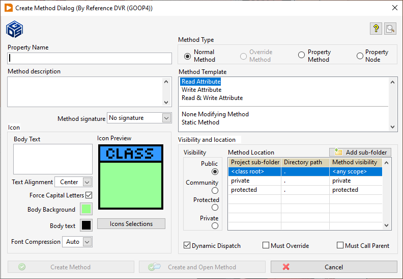

Dialog Create New Method
To add a new method to the class right click on the class in the project explorer and select GOOP>> Add Method
...
The Create Method Dialog box will appear.
Dialog Box Options
|
Method Type |
Normal Method Override Method This method override inherited methods. It is only when the class inherits from another class that it is possible to select this method. A window with the label Override Methods appears showing the selectable methods. Property Method This method can get and set the attributes in the object or the class. A window with the label Property appears showing the available attributes. |
|
Dynamic dispatch |
If the box is checked the method will be possible to override. |
|
Must override |
|
|
Must call parent |
|
|
Method Template |
The available method templates are displayed. Select what type of method you want to create and the method VI block diagram will be equipped with the necessary VI:s. These are the default method templates for a Normal Method: Read Attribute Write Attribute Read & Write Attribute None Modifying Method Send message to process Read Class Attribute Read & Write Class Attribute None Modifying Method Send message to process Read Class Attribute Read & Write Class Attribute |
|
Method description |
Description for the method. |
|
Visibility and Method Location |
In the Method Location select either <class root> or a specific project sub folder. If <class root> is selected the method will be placed directly below the lvclass in the project independently of selected visibility. If <class root> is selected you should use the radio buttons to choose visibility. Otherwise you select a project sub folder in the Method Location table. The radio buttons will be shaded but still indicate the visibility. All project sub folders of the lvclass will be displayed in the Method Location table. |
